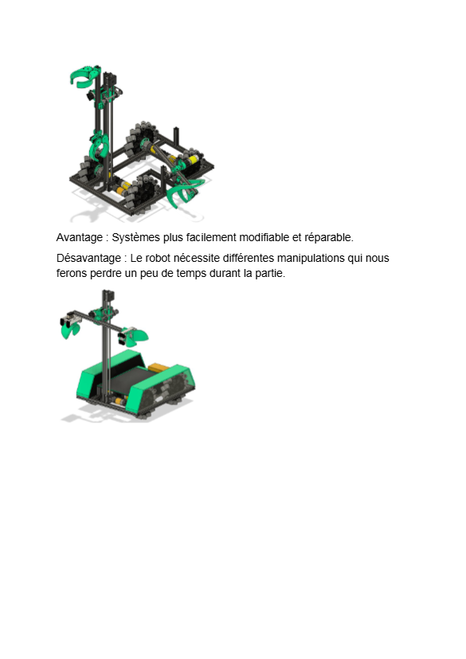
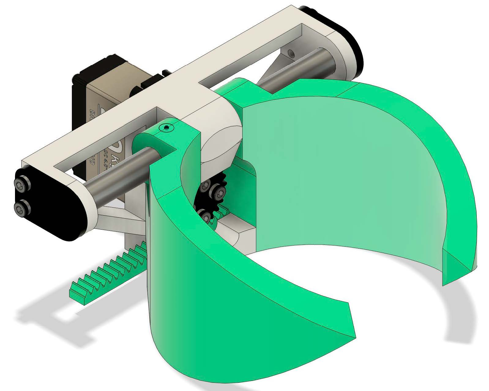

Bob dans sa forme olympique
L'équipe qui a travaillé sur Bob cette année 2025-2026 est fier de vous présenter son robot final.


Châssis
châssis constitue la base d’un robot fiable et performant. Le nôtre est entièrement boulonné afin d’assurer une structure à la fois droite, rigide et légère. Nous avons opté pour des roues omnidirectionnelles, ce qui permet une navigation fluide et précise sur un terrain plat. Les roues sont protégées par des profilés en aluminium 2020 et maintenues droites à leurs extrémités grâce à des roulements à billes, ce qui réduit les frottements et améliore la durabilité. Un espace a été réservé à l’arrière du châssis pour accueillir la batterie et le CRCStop, les rendant facilement accessibles pour des raisons de sécurité et de maintenance.

Pinces
Cette année, nos pinces utilisent un système de pignon et crémaillère afin de maximiser la force de prise. Elles sont actionnées par des servomoteurs, ce qui permet de réduire la masse totale présente sur le bras. Pour améliorer l’adhérence sur les objets manipulés, nous utilisons de l’Alien Tape™, qui constitue notre solution clé pour éviter les glissements. Les pinces sont positionnées aux extrémités opposées du bras, assurant un contrepoids constant lors de la rotation du bras sur lui-même. De plus, elles sont orientées à 90° l’une de l’autre, ce qui permet d’attraper efficacement les bobines, qu’elles soient debout ou à plat, selon leur profil.
Avantage : Avec seulement 4 points de contact, la prise est plus constante, peu importe la position initiale de la GP.
Désavantage : On arrive à la date limite de la remise du site web. Si vous voulez en savoir plus, n’hésitez pas à passer nous voir durant la compétition !
Bras
Le bras du robot est constitué d’une extrusion en aluminium capable de tourner sur lui-même à l’aide d’un moteur. L’axe central qui le supporte traverse deux roulements à billes, ce qui permet de minimiser le jeu mécanique tout en maximisant la solidité et la stabilité du système lors des mouvements rapides ou sous charge.
Ascenseur
L’ascenseur permet le déplacement vertical du bras à l’aide d’un système de chaîne et de roues dentées. Le choix d’une chaîne, plutôt qu’une courroie, permet d’éviter les problèmes de retensionnement liés à la fatigue du matériau. À la base de l’ascenseur se trouve un interrupteur de position servant à calibrer la position initiale du bras. Ce dispositif empêche le pilote de déplacer le bras au-delà de ses limites mécaniques, réduisant ainsi les risques de bris lors de l’opération.
Obstacles/solutions

Axe difficile à fixer au bras
Nous avions de la difficulté à fixer solidement le bras à son axe, ce qui causait une rotation indésirable autour de celui-ci. Pour résoudre ce problème, nous avons modifié l’axe afin de lui donner une forme de D-shaft, améliorant ainsi la transmission du couple et l’adhérence mécanique.

À la suite d’une chute accidentelle du robot depuis sa station de réparation (deux tabourets), un axe de moteur s’est plié. Grâce à un étau, un peu d’huile de coude et beaucoup d’ingéniosité, nous avons pu redresser l’axe et remettre le moteur en état de fonctionnement. Résultat : +100$ !

Force de prise insuffisante des pinces
Depuis la compétition de l’an dernier, notre équipe éprouve des difficultés à obtenir une force de prise suffisante. Cette année, le problème était amplifié par la masse des bobines et l’amplitude des mouvements requis. Nous avons donc abandonné les pinces directement attachées à un servomoteur et opté pour un système de transformation du mouvement par pignon et crémaillère. Cette solution permet d’échanger de la vitesse contre de la force, ce qui s’est avéré particulièrement efficace et rentable pour notre application.